New Year acomin
2007-2008
Русская версия
Especially for those how doesn't know we celebrate New Year on Mamai before the actual holiday on one week. This is already a tradition of 3 years for connecting together, cause in the New Year Eve everybody is busy with families and other stuff.. I think you understood what I mean.
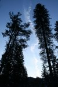
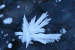
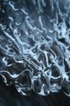
So, on this “New year” company was smaller then on last but not worse. On Friday Lesha (Irkutsk), Marina, and Shawn came first. They had fun, relaxed and struggled with the ramp near the kung-house. By the way Shawn is a really cool American hippy. He came to visit Marina and was got to the Russian snowboarding company. First he trued to snowboard in Baikalsk couple days ago and now was ready for freeride… On Saturday Lesha (Sludianka), Katia (Irkutsk) and Artiem (Sludianka) joined them.
22.12.2007 - on the same Saturday we went to snowboard and saw couple snowshoes tracks. It was our friends from Irkutsk they are Sigal and Kostia (he called a Black Doctor, cause he is really a doctor, why black I don't know). So, our Leshas from Sludianka and Irkutsk went to catch them on the snowshoes and did it right on the top ( 1500 m / 4 921,26 ft ) and slid down together one time . Other part of the company went slowly by only their own feet and was on the top by the sunrise where another joined them doing their second summit.
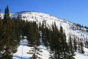
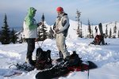
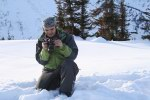
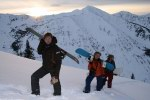
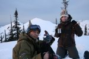
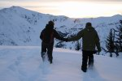
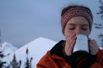
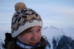
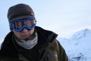
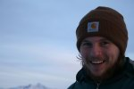
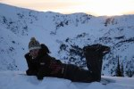
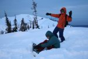
Then everybody went down all together. It was really surprising that Shawn ride good, fast and didn't catch any tree, some of the others did, by the way. So we decided to initiate him to the real freerider by hitting with the snowboard. Welcome to our team !!!
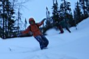
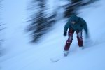
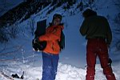
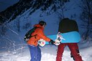
Actual New Year Eve was quite and Americanized. We drunk champaign out of the bottle and only one but really special glass, talk and eat marshmallows. For some people it was very first experience with burning marshmallow. Thanks to Shawn. Everybody was happy. Nobody wanted to sleep… Almost nobody… And some people even went jumping on the ramp and riding under the moonlight. Eh, that what we call “Happy New Year”
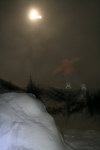
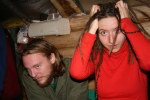
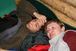
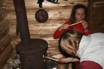
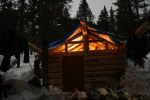
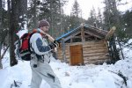
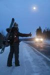
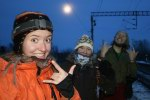
Next day everybody chose whatever they liked: riding, jumping, sleeping and making a winter house make up. There are so many things to do on Mamai!!!
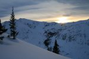
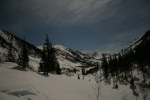
Story - Leushina Marina - January 2008
Foto - Belokrilov Alexey - December 2007